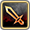
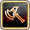
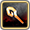

技能搜尋
隊長技/專武搜尋
啦啦隊搜尋
普池收集檢查
親愛度文本
最佳經驗隊
最佳複製隊
重置所有篩選
技能描述/關鍵字:
搜尋
搜尋模式:
原始
前到後
前到後且不分句
展開常用關鍵字
常用指令：
debuff move
藍果凍(防打消盾)
偷Buff
不利效果解除
偷竊(主動技)
打寶力
掉落複製
玩家經驗
異常賦予：
毒(5%)
猛毒(10%)
劇毒(15%)
爆毒(20%)
蘋果毒(30% 3回合)
蘋果毒改(35% 3回合)
看板毒(30% 5回合)
麻痺
金縛(80%不能行動)
麻蘋果(85%)
麻蘋果改(88%)
幻惑
幻覚
悩殺(5回合60%物理MISS)
暈眩(1回無法行動)
失神(2回無法行動)
睡眠
昏睡
睡蘋果
超昏睡
混亂
詛咒
封印
星宮解預兆 (配合 前到後且同句 模式)：
攻擊多回UP
防禦多回UP
攻魔多回UP
速度多回UP
HP多回UP
全能力多回UP
攻擊多回下降
防禦多回下降
攻魔多回下降
速度多回下降
異常耐性多回UP
異常耐性多回下降
防偷盾 (紅果凍):
無
有
精靈砲充能:
無
有
 刻印等效倍率:
0
15
25
30
40
49
60
異常耐性降低:
0
15
30
50
70
100
有利打消與數量:
機率: 無
ごく稀 (極稀)
稀
低確率
確率
高確率
確率50％
確実
數量: 無
1
有2以上
全部
屬性弱點包含:
無篩選
火
水
樹
光
暗
敵被傷:
無篩選
任意值
通用被傷
武器被傷
技能被傷
無視耐性降能力:
降攻擊
降防禦
降攻魔
降回魔
降速度
機率零防
角色來源分類:
普池角
一般限定
合作角
活動角
其他/3-4星
Skill State (狀態):
転生
昇華
昇華変化
昇華超変
限突
限突変化
限突超変
Another
ULT
Skill Type (種類):
攻擊(橘)
魔法(紫)
特殊(藍)
輔助(粉)
被動(綠)-A下
被動(綠)-S
被動(綠)-SS
被動(綠)-S3
角色屬性:
火
水
樹
光
闇
武器種類:
劍
斧
槍
本
短劍
杖
弓
特殊
顯示圖片
技能名
種類
狀態
角色
屬性
武器
技能描述
×